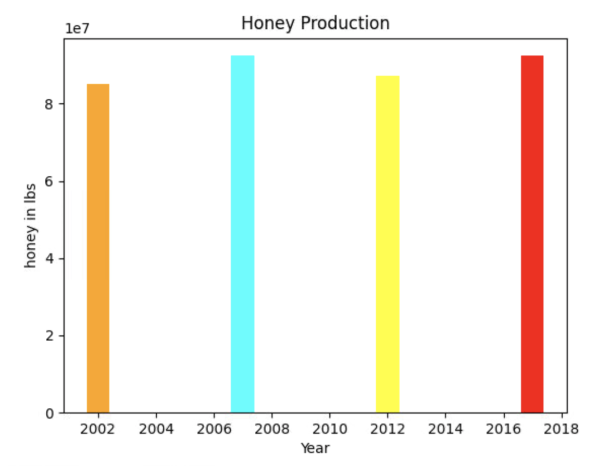
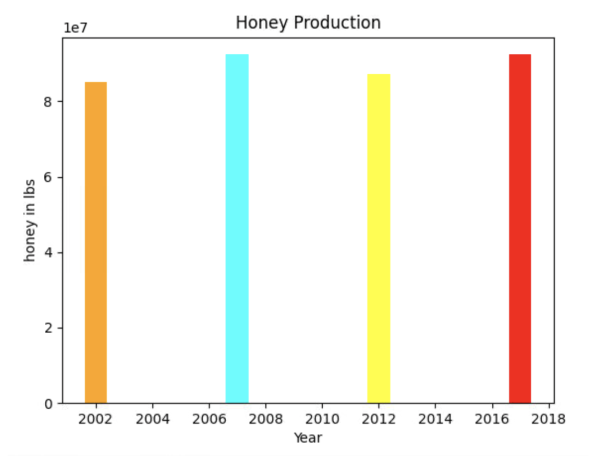

Chef Doggo's home
Portfolio
About Me
This is my Portfolio Page!


1.1.9 Eggdog Simulator

Our 1.1.9 project is an Eggdog Simulator which uses an animated picture of
Eggdog and is controllable using the arrow keys on your keybaord. We used a beach
wallpaper as our background and coded eggdog to spawn initially in the middle. This eggdog will
then jump up and spawn another eggdog which the user is given total control over.
1.2.5 Froggers Project
Our 1.2.5 project is comprised of froggers trying to cross the road. This is essentially
very similar to the flappy birds game which is a knock off of the superior froggers
game. Our Froggers game is superior to flappy bird in every aspect. Froggers as a game
is more fun and engaging than flappy bird. We used collision code to detect when froggers
is hit by a car and also abstraction to simplify ourc code.
Scratch Project
For the scratch project we made a an animal ping pong type of game
where two users can use the WASD keys and arrows keys to manuever one of two
characters. These characters include a starfish and a crab and the player who
commands them trys to score. The objective of the game is to beat the other
player and get to 10 goals first. In our code, we used animation, multiple
backgrounds, prcoedures, different costume types, events, scores, player inputs,
sound, and counters.
Rover spreadsheet project


For our fourth project, my team and I analyzed data sets to determine the location of a rover on an unknown planet. My group chose Inland Forests because the graphs we made were most in line with this biome. Graph 1 shows light level and low ambient light the best, whereas graph 2 may repreesnt the high pitch sound of the howl ofwinds with breaks in between to represent the thunderstors. Graph 3 on the other hand represents wind level as it shows low levels to show that there is little wind on this planet. Lastly, Graph 4 shows smooth curve graph which may represent the temperature in a forest as it may vary lightly but is mostly stable and does not change much.
Honey Production project
 

For our fifth project my team and I analayzed data which we obtained from the internet. We processed it and visualized it in multiple graphs. We also created graphs for the religationship between year, honeyproduction, and state and sorted these values by ranges of honey production. We created multiple types of graphs with various, unique styles.
Rabbits Grass and Weed project
For the sixth and final project, my team and I utilized the NetLogo simulation application to run the Rabbits Grass and Weeds simulation. We analyzed the purpose of the simulation and made a presentation regarding the simulation and how it works.